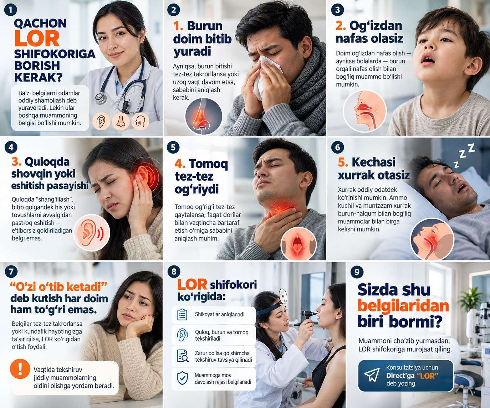

«Нашу клинику не знают.»
Новая клиника, новый филиал или новая услуга. Люди вокруг об этом ещё не знают.
Хороших врачей и качественного сервиса мало: пациенты должны знать о клинике и доверять ей. Мы делаем видео и карусели для Instagram с помощью искусственного интеллекта и регулярно рассказываем о вашей клинике, врачах и услугах.
Бывает и у новых клиник, и у тех, что работают годами. Врачи сильные, но новые пациенты знают о вас недостаточно.

Новая клиника, новый филиал или новая услуга. Люди вокруг об этом ещё не знают.
Каким бы опытным ни был врач, к нему не запишутся, если его ни разу не видели.
Посты выходят, лайки собираются. Но сколько пациентов это приводит в клинику — непонятно.
Человек спросил цену, не дождался ответа и ушёл в другую клинику.
Сегодня люди сначала ищут клинику в телефоне. Это самый быстрый и недорогой путь стать заметными.
Перед визитом открывают вашу страницу и смотрят на врачей и услуги.
Тот, кто уже «знаком» с врачом, охотнее записывается к нему.
Дешевле наружной рекламы. С первого месяца страница регулярно пополняется профессиональным контентом.
Каждый пост — это не просто красивая графика, а продуманная воронка, которая приводит пациентов на приём.

Увеличить размер ↗Разработана с использованием искусственного интеллекта и медицинского маркетинга. Пост закрывает боли пациента и ведёт его прямо на запись:
Для клиник, которые только начинают вести контент
Выбрать пакет ↗Для клиник, которые хотят регулярно работать в Instagram
Выбрать пакет ↗Для клиник, которым нужен больший объём контента
Выбрать пакет ↗Всё делаем с помощью искусственного интеллекта. Вам не нужно организовывать съёмки и монтаж. От вас — только фото клиники и информация.
Разница только в объёме контента
Вы заранее знаете, что происходит на каждом этапе.
Узнаём направление, врачей, основные услуги и ваши цели.
Темы на месяц: врачи, услуги, частые вопросы пациентов.
С помощью ИИ, на основе фото и информации вашей клиники.
Медицинскую информацию до публикации проверяет ваш специалист.
По согласованному графику, каждый месяц.
Ежемесячный отчёт: охват, посещения профиля, новые подписчики.
Чтобы не терять обращения, когда клинику начнут узнавать.
Бесплатно для клиник, начавших пакет до конца октября. Дизайн выбираете из наших готовых сайтов.
Смотреть 25 готовых сайтов ↗Все обращения и пациенты в одном месте, никто не потеряется. Настроим качественно и по доступной цене.

Подключим чат-бот Chatplace: даже ночью он от имени клиники ответит про цены, адрес и запись.

Основатели Tizimmedia — Нурали и Малика. С каждой клиникой работаем лично.


Когда клинику узнают, при желании переходим к следующему этапу: работа с пациентами и систематизация процессов клиники. Этому мы учились в Центре систематизации бизнеса (BTM).
Короткие ответы о предложении.
Если только начинаете вести контент — достаточно Start. Если хотите регулярно выходить в Instagram — Growth. Если нужно рассказать о нескольких врачах и направлениях — Pro. Можно сначала посмотреть бесплатный пример, а потом выбрать.
Готовим для вашей клиники 2 видео и 3 карусели. Понравится — продолжим, нет — на этом остановимся. Продолжать не обязательно.
Клиникам, которые начнут месячный пакет до конца октября. Дизайн выбираете из готовых сайтов на web.tizimchibek.uz, мы наполняем его данными вашей клиники.
Нет. Наша задача — сделать клинику узнаваемой, а страницу в Instagram полной и вызывающей доверие. Систематизация потока пациентов — отдельный этап.
С помощью искусственного интеллекта. С согласия врача создаём его AI-аватар, либо делаем анимационные ролики об услугах и ролики из фото клиники. Несуществующих врачей и пациентов не показываем.
Фото клиники и врачей, список услуг и цен, а также специалист, который проверит медицинскую информацию.
Оставьте имя и направление клиники. Бесплатно подготовим 2 видео и 3 карусели.